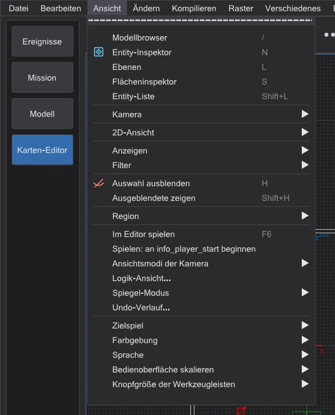
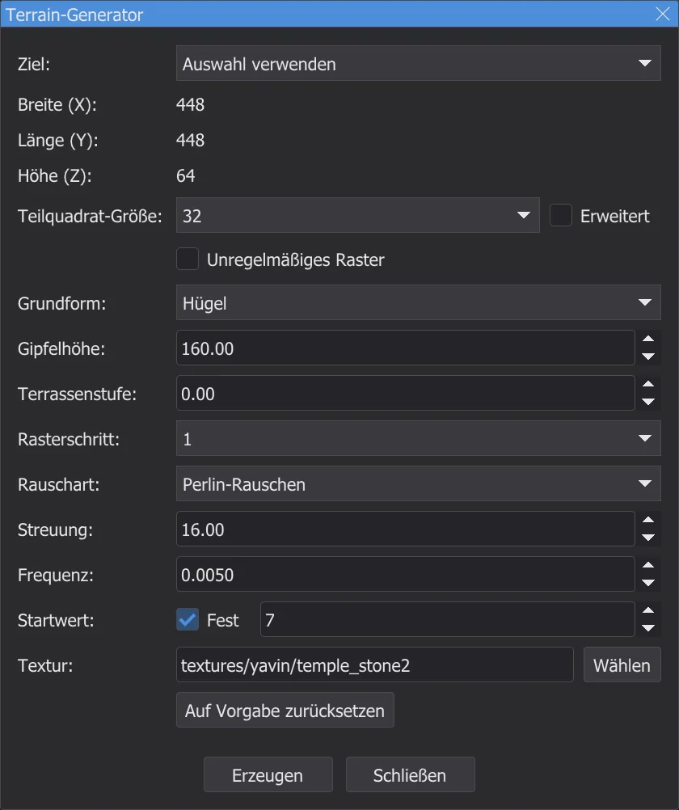
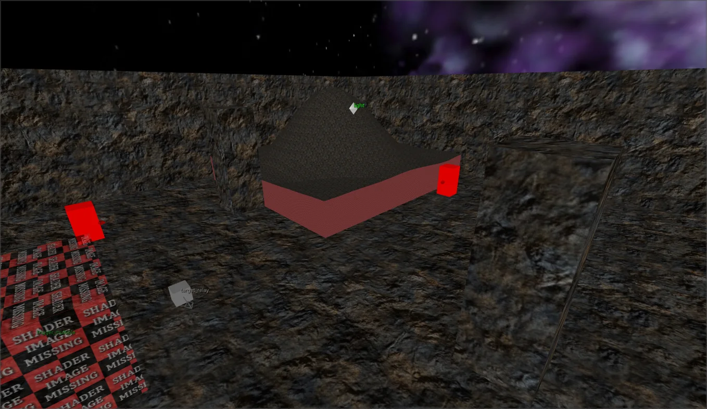
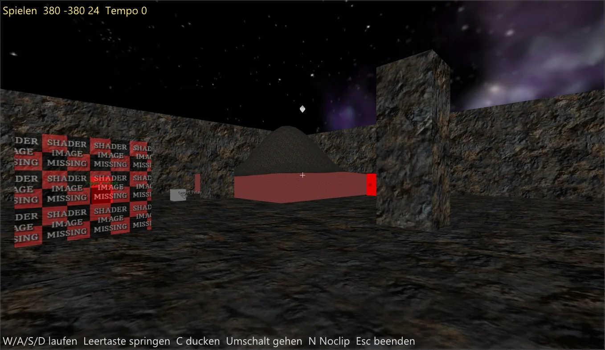
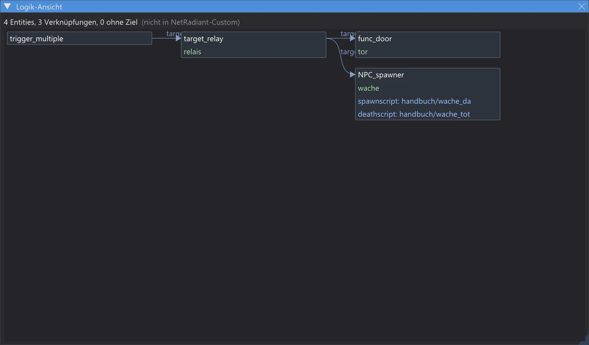
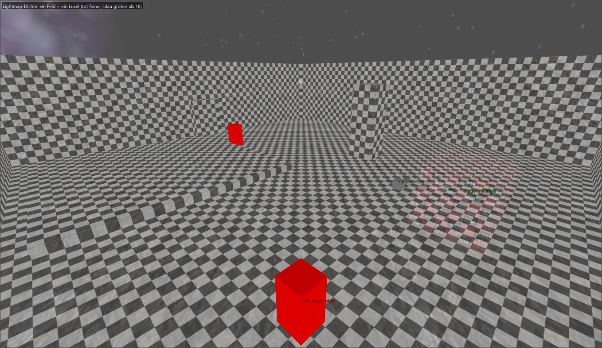
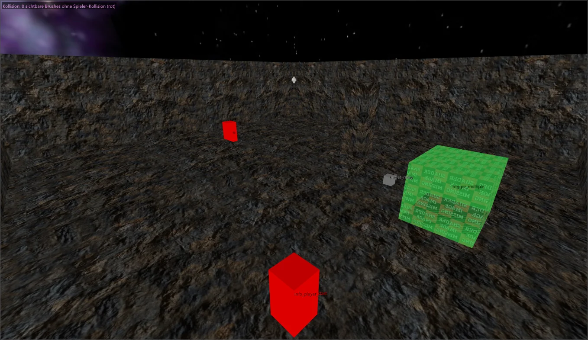
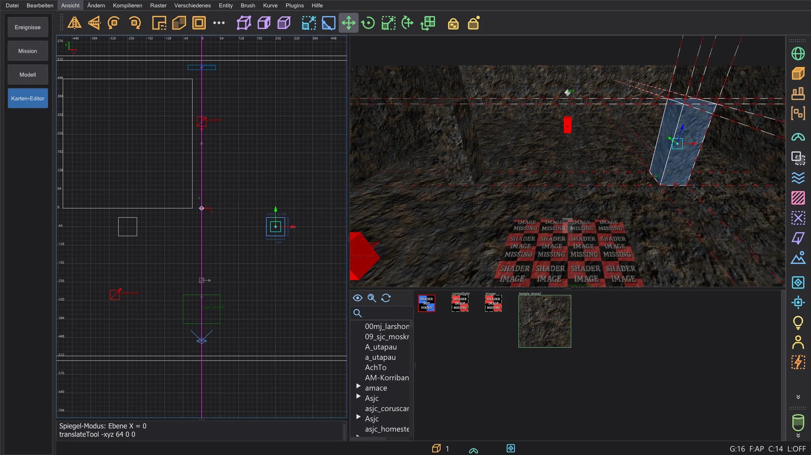
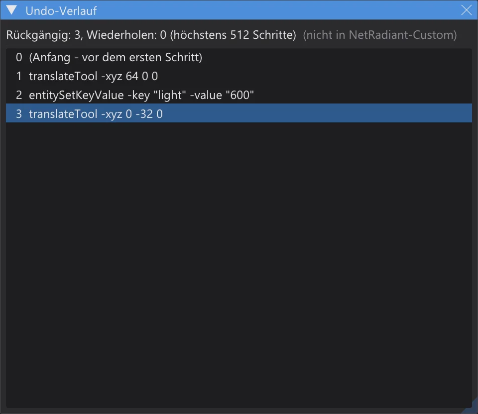

Karten-Editor: Terrain, Spielen, Logik, Spiegel und mehr
Terrain erzeugen, ohne Kompilieren durch die Karte laufen, die Verknüpfungen der Entities sehen, Lightmap-Dichte und Kollision prüfen, symmetrische Karten mit dem Spiegel-Modus bearbeiten und durch den Undo-Verlauf springen.
Alles auf dieser Seite außer dem Terrain Generator gibt es nicht in NetRadiant-Custom: jede Funktion hat ihren eigenen Menüeintrag mit diesem Hinweis, und sind alle aus, verhält sich der Editor wie NetRadiant-Custom. Die neuen Einträge stehen am Ende von Ansicht, über den Programm-Einstellungen.

Terrain Generator#
Plugins > TerrainGenerator > Generate Terrain ist das Plugin aus dem aktuellen Quelltext von NetRadiant-Custom (master, nach dem Release 20260114), Zeile für Zeile übernommen: bei gleichen Werten dieselben Höhen, Dreiecke und Texturen wie das Original. Der Dialog bleibt offen, während du in den Ansichten arbeitest.




- Ziel: Auswahl verwenden nimmt die Größe des gewählten Brushes und ersetzt ihn; Größe von Hand baut das Terrain um den Ursprung.
- Grundform: (Hügel, Krater, Grat, Hang, Vulkan, Tal, Tunnel ...), Rauschart:, Streuung:, Frequenz:, Terrassen und das Raster wie im Original; Erzeugen ist ein Rückgängig-Schritt.
- Eigene Ergänzung: Startwert: Fest startet die Zufallszahlen mit einem festen Wert - dieselben Werte geben dann wieder dasselbe Terrain. Aus (Vorgabe) läuft die Zufallsfolge weiter wie in NetRadiant-Custom.
Freie Split-Fenster#
Preferences > Interface > Layout > Split-Fenster frei belegen (Layout Split): jedes der vier Fenster bekommt in seiner Ecke ein kleines Menü - Kamera, XY, XZ oder YZ, auch zwei Fenster mit derselben Ansicht. Strg+Tab wechselt den Typ des aktiven 2D-Fensters, die Teiler behalten ihre Lage. Aus (Vorgabe) sind die vier Fenster fest wie in NetRadiant-Custom.
Im Editor spielen#

- Ohne Kompilieren: die Kollision kommt direkt aus den Brushes und Patches mit den Inhalten, die q3map2 ihnen gäbe (surfaceparms des Spiels, Clip-Brushes, nonsolid, Wasser ...). Gehen, Springen, Treppen und Schrägen nutzen den Port der Bewegung des Spiels (Pmove) - derselbe wie in der Vorschau des Programms: JKA und Movie Duels oder die Regeln von Jedi Outcast.
- W/A/S/D bewegen, Leertaste springt, C oder Strg duckt, Umschalt geht, die Maus schaut, N schaltet Noclip, Esc beendet und stellt die Kamera zurück, wo sie war.
- Spielen: an info_player_start beginnen: an, ist der Start das erste info_player_start (sein origin + 9 und sein angle, wie das Spiel ihn wählt); aus, ist der Start die Kamera.
Logik-Ansicht#

- Logik-Ansicht zeichnet jede Verknüpfung zwischen den Entities als Graph von links nach rechts: target, target2 ... target5, NPC_target, die Ziele der Türen und jeden *target*-Schlüssel der Entity-Definitionen; die Skript-Schlüssel (spawnscript, usescript, deathscript ...) stehen im Kasten der Entity.
- Ein Klick auf einen Kasten wählt die Entity und zentriert die 2D-Ansichten und die Kamera darauf; ein Doppelklick auf eine Skript-Zeile öffnet das ICARUS-Skript im Skript-Editor. Das Mausrad zoomt, die rechte oder mittlere Maustaste verschiebt.
- Ein Ziel ohne passenden targetname erscheint als roter Kasten - eine Verknüpfung, die im Spiel ins Leere führt.
Ansichtsmodi der Kamera#




- Lightmap-Dichte: ein Schachbrett in Luxel-Größe je Fläche, gerechnet wie q3map2 (q3map_lightmapSampleSize, _samplesize und _lightmapscale der Entity, -samplesize; vergrößert, bis die Fläche in 128 Luxel passt). Feiner als 16 rötlich, gröber bläulich, Flächen ohne Lightmap grau.
- Kollision: Brushes nach dem Inhalt, den q3map2 ihnen gibt - playerclip magenta, monsterclip orange, botclip gelb, shotclip türkis, nodrop dunkelrot, Wasser, Schleim, Lava, Nebel, Trigger. Sichtbare Wände, durch die der Spieler geht (ohne Spieler-Kollision), leuchten rot.
- Sichtbarkeit (PVS) und Dreieckslast brauchen die gebaute .bsp neben der Karte (mit VIS): was die Engine vom Cluster der Kamera aus zeichnet, grün, oder eine Wärmekarte der Dreiecke, die von jedem Ort aus gezeichnet werden. Die Zahlen stehen oben links in der Kamera.
Spiegel-Modus#

- Spiegel-Modus: Aus, Spiegelebene X, Spiegelebene Y oder Spiegelebene Z; die Ebene geht durch den Ursprung oder, mit Ebene durch die Mitte der Auswahl (aufs Raster), durch die Mitte der Auswahl auf dem Raster. Sie erscheint als magentafarbene Linie in den 2D-Ansichten.
- Jede Änderung an der Auswahl wird im selben Rückgängig-Schritt auf das Gegenstück geschrieben - beim Ziehen live. Brushes und Patches zählen einzeln, Punkt-Entities und Gruppen als Ganzes; origin, angle und angles werden gespiegelt, Texturen wie bei Flip (mit Texture Lock wie eingestellt).
- Gibt es das genaue Spiegelbild schon, wird es zum Gegenstück; sonst legt die erste Änderung eine gespiegelte Kopie an. Löschen entfernt beide; Rückgängig bringt beide genau zurück. Objekte, die symmetrisch auf der Ebene liegen, bekommen kein Gegenstück.
Undo-Verlauf#

Undo-Verlauf listet alle Rückgängig-Schritte (der älteste zuerst) und darunter grau die Wiederholen-Schritte. Ein Klick springt zum Stand nach diesem Schritt, mit so vielen Undo oder Redo wie nötig - jedes mit seiner Konsolenzeile, wie mit Strg+Z und Strg+Y. Die Liste reicht so weit zurück wie der Undo-Stapel (Preferences > Undo Queue Size, Vorgabe 512).
misc_model aus allen Modellordnern#
misc_model aus der Geometrie zurückgewinnen (Editor-Daten behalten) sucht Modelle jetzt in allen Modellordnern des Spiels, nicht nur in den Ordnern der Shader der Karte. Ein Modell-Index (je Modell und Netz: Eckenzahl, Dreiecksmenge und Shader) liegt im Einstellungsordner als karte_modellindex_<…>.txt. Beim ersten Mal - und für neue oder geänderte .pk3 - lädt bhed_q3map2 die fehlenden Modelle einmal (bei einer großen Installation etwa eine halbe Minute); danach werden nur die Modelle geladen, deren Netze zu einer Dreiecksfläche der .bsp passen oder deren Shader die .bsp nutzt. Die Konsole nennt Index und Kandidaten.
| Karte | vorher | jetzt |
|---|---|---|
| t2_trip | 0 | 13 |
| yavin1 | 18 | 32 |
| hoth2 | 5 | 32 |
| kor1 | 52 | 52 |
| jeditemple_garden (Quelle bekannt) | 265 / 265 | 265 / 265 |
GPU-Schattentests (abgeschaltet)#
bhed_q3map2 hat für -light den Schalter -bhedgpu: die Prüfung „trifft der Strahl vom Luxel zum Licht etwas?“ läuft auf der Grafikkarte (Direct3D 11), das Licht selbst bleibt auf der CPU. Das Ergebnis ist Byte für Byte gleich wie ohne - geprüft auf fünf Karten und vom ctest q3map2_gpu. Auf dem gemessenen Rechner (32 Threads, RTX 4070 Laptop) war es nicht schneller (mp/duel1 2,3 s → 3,2 s, kejim_post 10,0 s → 11,3 s), darum steht es nicht im Build-Menü und bleibt aus.